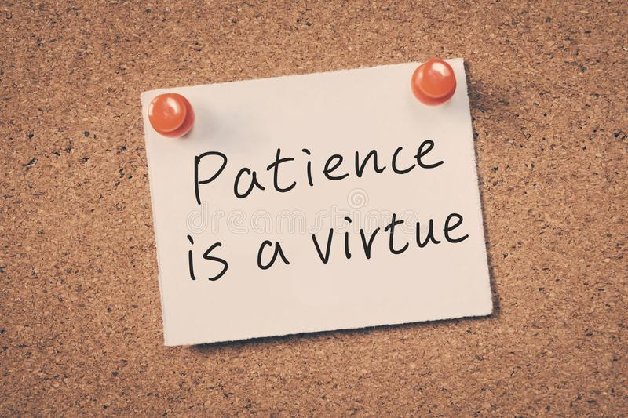
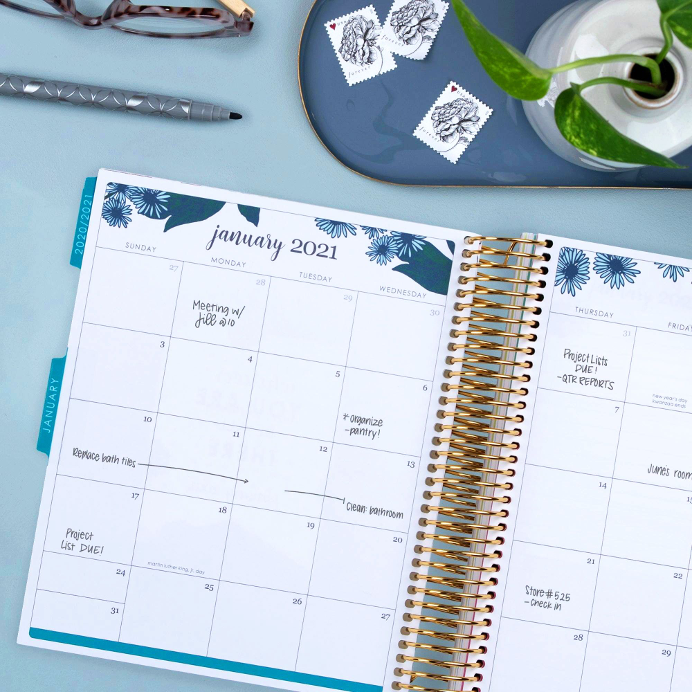

This personal development page will consist of my strengths and how/whether I have been developing myself in these areas
in the last three to five years of my life.
Patience: Being patient means that I can deal with delays. This is an important strength to have in
life because there are many instances in which interruptions may occur in the work progress. I am capable of waiting and
handling setbacks.

Organizational skills: I am able to stay focused on different tasks, and use my time, energy,
strength and mental capacity effectively and efficiently in order to achieve the desired outcome. which is evident in the
fact that I go to University full-time while also occassionally working and being the SCIT first year representative.

Communication Skills: Good communication first starts with listening. Not only am I an
exemplary listener but I am also able to effectively relay information as well as explain information to others. I am always
able to successfully articulate my thoughts in a way that others will understand.
Patience: This is something that I had struggled with for awhile. For most of my life I was
very impatient and would stress at the mention of any setbacks. I wanted to do everything immediately and wait for nothing.
I knew this was a bad trait so overtime I taught myself how to calm myself and occupy myself with other activities when
faced with setbacks. Setbacks are inevitable in life so it's just up to me on how I respond when faced with them.
Organizational skills: This is a trait I've had from an early age.
I've always been strong at organizing my schedule. When I was younger and had less to do therefore I could easily keep all my
tasks in mind however, now that I'm older and my workload and personal responsibilities have increased, I write down
and plan out each taks that I have to carry out. And for the past 3 years I've invested in planners to help me with this.
Communication Skills: This is a skill I've had to develop overtime due to me being very shy
when I was younger. The listening aspect of it was relatively easy for me sincce I was always quiet and therefore
readily listened to others as I preffered them talking and not me. For the past 5+ years I've slowly but surely broken out of
my shell and gained the ability to articulate myself well.